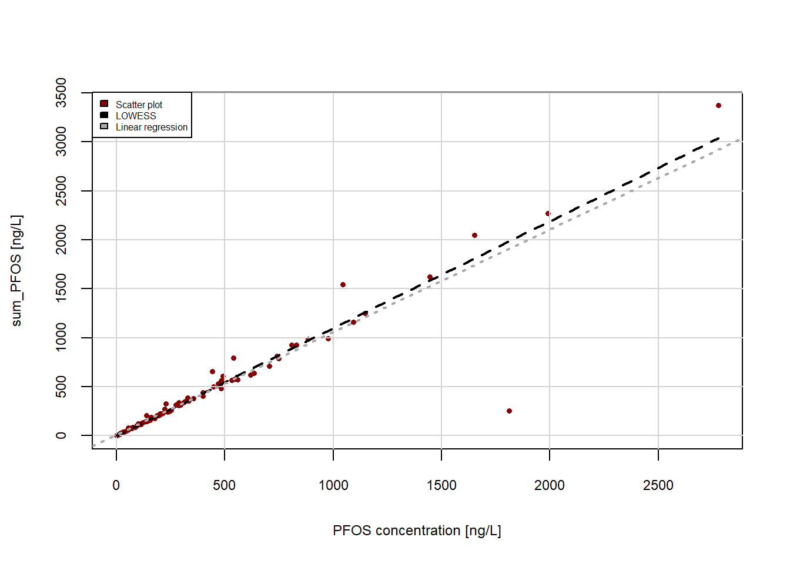
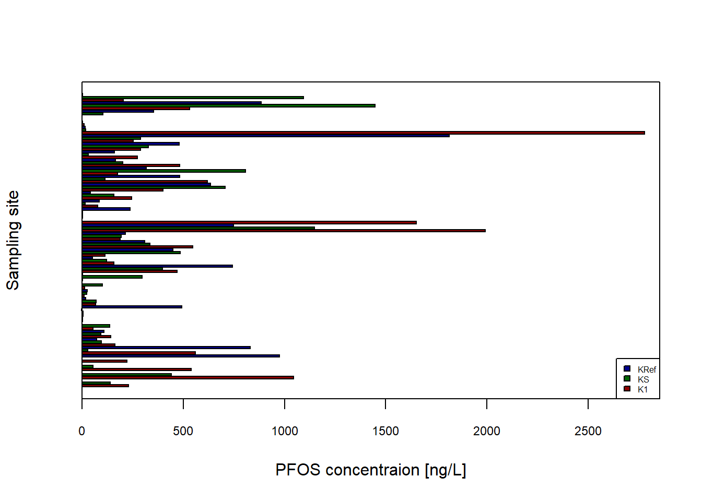
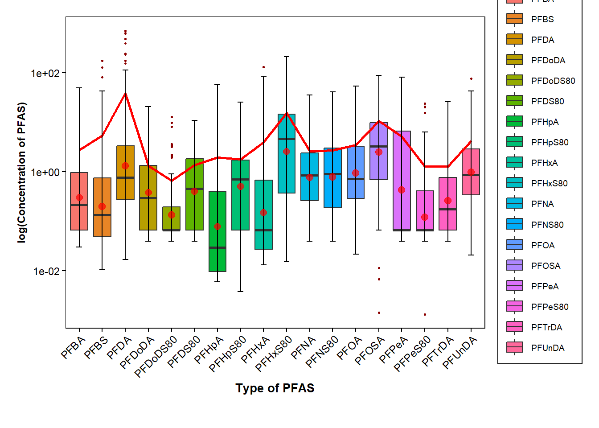

library(readxl)
#Will import the sheet "Ovwerview" from the Excel-file "Statistics_Kumla_20200408" and save it in the object "Data_Kumla"
Data_Kumla <- read_excel("C:/Users/vicer06/OneDrive - Linköpings universitet/Documents/03_Courses/R_Course/Statistics_Kumla_20200408.xlsx", sheet = "Overview")2 Data Visualisation
2.1 Import/ Export data
Data can be imported in R in different ways. In the Environment tab, there is an import-data button, in which it is possible to select the type of data (e.g. Excel). From that tab it is possible to receive the command needed if one wants to have it in a script.
To import .csv data, the read.csv() (or read_csv()) function can be used:
csv_data <- read.csv("csv file location")
It is also possible to easily export data to a csv-file by using the function write.csv() :
write.csv("name of data", "name of the file to export to (and location if other than working directory)", row.names = FALSE) row.names = FALSE to remove the row names to be written in the output.
For importing data from an Excel-file, the package readxl package can be used. In the package, the function read_excel() can be used which requires the location of the file and to import a specific sheet, the argument sheet= "name of the sheet" can be used.
The imported data will be a data frame.
2.2 Basic Plotting
Plots can be made by using the Base R functions.
#Scatter plot of the data in column "PFOS" and "sum_PFOS"
plot(x=Data_Kumla$PFOS, y=Data_Kumla$sum_PFOS,
xlab = "PFOS concentration [ng/L]", #adds x-axis title
ylab = "sum_PFOS [ng/L]", #adds y-axis title
pch = 16, #solid circles, pch=1 unfilled cicles
cex.lab=0.75, #changes font size of axis titels, 1 is default size
cex.axis=0.75, #changes font size of axis values
cex = 0.6, #changes point size
col="darkred")
grid(lty=1, col="lightgrey", lwd=1) #adds a grid
lines(lowess(Data_Kumla$PFOS, Data_Kumla$sum_PFOS),
col="black", lwd=2, lty=2) #adds a local regression line as a black colour dashed (lty=2) line with line width 2
abline(lm(Data_Kumla$sum_PFOS ~ Data_Kumla$PFOS, data=Data_Kumla), col="darkgrey", lwd=2, lty=3) #adds regression line in darkgrey colour
legend(x="topleft", legend=c("Scatter plot", "LOWESS", "Linear regression"), fill=c("darkred","black","darkgrey"),
cex=0.5)
Other plot types:
Data_Kumla$`Sampling site`<- factor(Data_Kumla$`Sampling site`)
barplot(height=Data_Kumla$PFOS,
ylab="Sampling site",
xlab="PFOS concentraion [ng/L]",
col= c("darkred","darkgreen","darkblue"),
cex.axis = 0.75,
cex.names = 0.75,
legend.text=c("K1", "KS", "KRef"),
args.legend=list(x="bottomright", cex=0.5),
horiz = TRUE,
xlim = c(0, max(Data_Kumla$PFOS)+75))
box() #adds box around the plot
2.3 Tidyverse
Tidyverse contains a collection of packages. All the functions from the packages follow the same type of structure, making them easier to use. The core packages included in Tidyverse are ggplot2, dplyr, tidyr, readr, purr, tibble, stringr, and forcats.
| readr | for reading rectangular data from e.g. .csv by using read_csv() |
| tidyr | for organising tabular data e.g. pivot_longer() to combine multiple columns to a long table |
| purr | can be used to exchange For Loops with code e.g. by using map() to apply a function to all elements in a list and returns a list |
| dplyr | can be used for data manipulations e.g. by piping |
Tidy data: Each variable is a column, each column is a variable. Each observation is a row, each row is an observation. Each value is a cell, each cell is a single value.
2.3.1 Pipes
Is a way to simplify R code. By using %>% (or |>, shortcut: ctrl+shift+m) code can be rewritten to become easier interpretated. The symbol can be thought of as a “+” symbol.
For example, if you would like to only have the concentrations of PFOS in Data_Kumla above 100 ng/L. Instead of having to use For loops and/or if statements or other type of commands, it can simply be written using pipe operations:
library(tidyverse)
PFOS_above100 <- Data_Kumla |> select(PFOS)|> filter(PFOS>100)
#or use %>% instead of |>, first requires paranthesis when calling functions, second does not
PFOS_above100# A tibble: 65 × 1
PFOS
<dbl>
1 229.
2 140.
3 1045.
4 442.
5 540.
6 223.
7 976.
8 559.
9 830.
10 162.
# ℹ 55 more rowsOr in situation when nested function i used. E.g. want to the mean of the PFOS concentrations and round it to 1 decimal.
mean_PFOS <- round(mean(Data_Kumla$PFOS),1)
mean_PFOS[1] 321.5However, by using pipe operation it becomes more readable:
mean_PFOS_pipe <- Data_Kumla$PFOS %>% mean %>% round(1)
mean_PFOS_pipe[1] 321.52.3.2 ggplot2
ggplot2 can be used to make plots in R instead of using the base R functions.
require(ggpubr) #reqiured to add regression equationLoading required package: ggpubrmean_data <- data.frame(a=mean(Data_Kumla$PFOS), b=mean(Data_Kumla$sum_PFOS))
p <- ggplot(data=Data_Kumla, mapping=aes(x=PFOS, y=sum_PFOS))+
geom_point(size=0.6, aes(colour="Scatter plot"))+
geom_smooth(method="loess", size=0.6, aes(colour="LOWESS"), se=FALSE,linetype="longdash")+
geom_smooth(method="lm", size=0.6, aes(colour="Linear regression"), se=FALSE, linetype="dashed")+
stat_regline_equation(label.x=1300, label.y=580, colour="darkgrey", size=3)+ #adds regression equation
stat_cor(aes(label=..rr.label..), label.x=1300, label.y=420, size=3, colour="darkgrey", r.digits = 4)+ #adds R^2
scale_color_manual(values = c("Scatter plot" = "darkred", "LOWESS" = "black", "Linear regression" = "darkgrey")) + #colours of points
theme_minimal()+
theme(
panel.background = element_rect(fill = "white"), # Set white background
panel.grid = element_blank(), # Remove grid lines
axis.text = element_text(size = 9), # Increase font size of axis text
axis.title.y = element_text(size = 9,face = "bold"), # Make y-axis label bold and italic
axis.text.y = element_text(color = "black", size = 9), # Make x-axis text bold
axis.title.x = element_text(size = 10,face = "bold"),
axis.text.x = element_text(color = "black", size = 9), # Make x-axis text bold
axis.ticks.x = element_line(color = "black"), # Add ticks to x-axis in black color
axis.ticks.y = element_line(color = "black"), # Add ticks to y-axis in black color
aspect.ratio = 1, # Set aspect ratio
plot.margin = margin(0.5, 0.5, 0.4, 0.5, "cm"), # Set plot margins
legend.text=element_text(size=9),
legend.position = c(0.25, 0.85),
legend.background = element_rect(fill="white",
size=0.5, linetype="solid",
colour ="black"),
legend.title = element_blank(), #removes the title of the legend
legend.margin = margin(0.001, 1, 0.5, 0.5))+
geom_point(data=mean_data, aes(x=a,y=b), colour="black",size=3, alpha=0.9, shape=21, fill="salmon") #highlights the mean point in redWarning: Using `size` aesthetic for lines was deprecated in ggplot2 3.4.0.
ℹ Please use `linewidth` instead.Warning: The `size` argument of `element_rect()` is deprecated as of ggplot2 3.4.0.
ℹ Please use the `linewidth` argument instead.Warning: A numeric `legend.position` argument in `theme()` was deprecated in ggplot2
3.5.0.
ℹ Please use the `legend.position.inside` argument of `theme()` instead.p+ geom_text(aes(mean(PFOS)+350, mean(sum_PFOS)+10,label=paste("Mean point")), size=3, colour="red4") #adds a text for the mean pointWarning: The dot-dot notation (`..rr.label..`) was deprecated in ggplot2 3.4.0.
ℹ Please use `after_stat(rr.label)` instead.Warning in geom_text(aes(mean(PFOS) + 350, mean(sum_PFOS) + 10, label = paste("Mean point")), : All aesthetics have length 1, but the data has 108 rows.
ℹ Did you mean to use `annotate()`?`geom_smooth()` using formula = 'y ~ x'`geom_smooth()` using formula = 'y ~ x'#p+ geom_point(data=Data_Kumla, aes(x=PFOSA, y=sum_PFOS), colour="pink")ggscatter(data=Data_Kumla,x="PFOS", y="sum_PFOS", add="reg.line")+
stat_cor(label.x=1300, label.y=750)+
stat_regline_equation(label.x=1300, label.y=480)
sampling <- as.factor(Data_Kumla$`Sampling site`)
b <- ggplot(data=Data_Kumla, aes(x=sampling, y=PFOS, fill=sampling))+
geom_bar(stat = "identity", width = 0.5, colour="black",position=position_dodge())+
scale_fill_manual(values = c("K1" = "darkblue", "KS" = "darkgreen", "KRef" = "darkred"))+
theme_minimal()+
theme(
panel.background = element_rect(fill = "white"), # Set white background
panel.grid.major = element_blank(), # Remove grid lines
panel.grid.minor = element_blank(), # Remove grid lines
axis.text = element_text(size = 9), # Increase font size of axis text
axis.title.y = element_text(size = 9,face = "bold"), # Make y-axis label bold and italic
axis.text.y = element_text(color = "black", size = 9), # Make x-axis text bold
axis.title.x = element_text(size = 10,face = "bold"),
axis.text.x = element_text(color = "black", size = 9), # Make x-axis text bold
axis.ticks.x = element_line(color = "black"), # Add ticks to x-axis in black color
axis.ticks.y = element_line(color = "black"), # Add ticks to y-axis in black color
#aspect.ratio = 1, # Set aspect ratio
plot.margin = margin(0.5, 0.5, 0.4, 0.5, "cm"), # Set plot margins
legend.text=element_text(size=9),
#legend.position = c(0.85, 0.85),
legend.background = element_rect(fill="white",
size=0.5, linetype="solid",
colour ="black"),
legend.title = element_blank(),
#legend.margin = margin(0.001, 1, 0.5, 0.5)
)
bb2 <- ggplot(data=Data_Kumla, aes(x=PFOS,fill=sampling))+
geom_bar(stat = "bin", binwidth = 108, colour="black",position=position_dodge())+
scale_fill_manual(values = c("K1" = "darkblue", "KS" = "darkgreen", "KRef" = "darkred"))+
theme_minimal()+
theme(
panel.background = element_rect(fill = "white"), # Set white background
panel.grid.major = element_blank(), # Remove grid lines
panel.grid.minor = element_blank(), # Remove grid lines
axis.text = element_text(size = 9), # Increase font size of axis text
axis.title.y = element_text(size = 9,face = "bold"), # Make y-axis label bold and italic
axis.text.y = element_text(color = "black", size = 9), # Make x-axis text bold
axis.title.x = element_text(size = 10,face = "bold"),
axis.text.x = element_text(color = "black", size = 9), # Make x-axis text bold
axis.ticks.x = element_line(color = "black"), # Add ticks to x-axis in black color
axis.ticks.y = element_line(color = "black"), # Add ticks to y-axis in black color
#aspect.ratio = 1, # Set aspect ratio
plot.margin = margin(0.5, 0.5, 0.4, 0.5, "cm"), # Set plot margins
legend.text=element_text(size=9),
#legend.position = c(0.85, 0.85),
legend.background = element_rect(fill="white",
size=0.5, linetype="solid",
colour ="black"),
legend.title = element_blank(),
#legend.margin = margin(0.001, 1, 0.5, 0.5)
)
b2#http://www.sthda.com/english/wiki/ggplot2-barplots-quick-start-guide-r-software-and-data-visualization
#+++++++++++++++++++++++++
# Function to calculate the mean and the standard deviation
# for each group
#+++++++++++++++++++++++++
# data : a data frame
# varname : the name of a column containing the variable
#to be summariezed
# groupnames : vector of column names to be used as
# grouping variables
data_summary <- function(data, varname, groupnames){
require(plyr)
summary_func <- function(x, col){
c(mean = mean(x[[col]], na.rm=TRUE),
sd = sd(x[[col]], na.rm=TRUE))
}
data_sum<-ddply(data, groupnames, .fun=summary_func,
varname)
data_sum <- rename(data_sum, c("mean" = varname))
return(data_sum)
}#another way to calculate mean and sd, notice data_pfas created below with pivot_longer(). Could use Data_Kumla and summarize on selected columns instead.
data_pfas |> group_by(Type_of_PFAS) |> summarize(Conc_mean = mean(Conc_of_PFAS), Cond_SD = sd(Conc_of_PFAS)) data_pfas <- Data_Kumla |> pivot_longer(cols = 13:31,
names_to = "Type_of_PFAS",
values_to = "Conc_of_PFAS") |>
select(c(`Sampling site`, Type_of_PFAS, Conc_of_PFAS))
data_pfas_sd <- data_pfas |> data_summary(varname="Conc_of_PFAS", groupnames="Type_of_PFAS") |> filter(Conc_of_PFAS <100) #exclude PFAS above 100 in mean concentrationLoading required package: plyr------------------------------------------------------------------------------You have loaded plyr after dplyr - this is likely to cause problems.
If you need functions from both plyr and dplyr, please load plyr first, then dplyr:
library(plyr); library(dplyr)------------------------------------------------------------------------------
Attaching package: 'plyr'The following object is masked from 'package:ggpubr':
mutateThe following objects are masked from 'package:dplyr':
arrange, count, desc, failwith, id, mutate, rename, summarise,
summarizeThe following object is masked from 'package:purrr':
compactggplot(data=data_pfas_sd, aes(y=Conc_of_PFAS, x=Type_of_PFAS, fill=Type_of_PFAS))+
geom_bar(stat = "identity",position=position_dodge())+
geom_errorbar(aes(ymin=Conc_of_PFAS-sd, ymax=Conc_of_PFAS+sd), width=0.2, position=position_dodge(0.9))+ #add errorbars
theme_minimal()+
theme(
panel.background = element_rect(fill = "white"), # Set white background
panel.grid.major = element_blank(), # Remove grid lines
panel.grid.minor = element_blank(), # Remove grid lines
axis.text = element_text(size = 9), # Increase font size of axis text
axis.title.y = element_text(size = 9,face = "bold"), # Make y-axis label bold and italic
axis.text.y = element_text(color = "black", size = 9), # Make x-axis text bold
axis.title.x = element_text(size = 10,face = "bold"),
axis.text.x = element_text(color = "black", size = 9, angle=45, hjust=1), # Make x-axis text bold and in an angle
axis.ticks.x = element_line(color = "black"), # Add ticks to x-axis in black color
axis.ticks.y = element_line(color = "black"), # Add ticks to y-axis in black color
#aspect.ratio = 1, # Set aspect ratio
plot.margin = margin(0.5, 0.5, 1, 0.5, "cm"), # Set plot margins
legend.text=element_text(size=7),
#legend.position = c(0.85, 0.85),
legend.background = element_rect(fill="white",
size=0.5, linetype="solid",
colour ="black"),
legend.title = element_blank(),
#legend.margin = margin(0.001, 1, 0.5, 0.5)'
)#excludes PFOS that has higher concentrations
data_pfas |> filter(Type_of_PFAS != c("PFOS")) |>
ggplot(mapping=aes(x=Type_of_PFAS, y=Conc_of_PFAS, fill=Type_of_PFAS))+
geom_boxplot(outlier.color = "darkred", outlier.shape=16, outlier.size = .6, notch=FALSE)+ #log of conc. values
geom_line(data=data_pfas_sd, aes(x = Type_of_PFAS, y = Conc_of_PFAS), size = 1, color="red", group = 1)+ #log of mean values
stat_boxplot(geom = "errorbar",
width = 0.25)+
stat_summary(fun.y=mean, geom="point", shape=20, size=4, color="red", fill="red", alpha=0.7) +
scale_y_log10()+
labs(x = "Type of PFAS", y = "log(Concentration of PFAS)", color= "") +
theme_minimal()+
theme(
panel.background = element_rect(fill = "white"), # Set white background
panel.grid.major = element_blank(), # Remove grid lines
panel.grid.minor = element_blank(), # Remove grid lines
axis.text = element_text(size = 9), # Increase font size of axis text
axis.title.y = element_text(size = 9,face = "bold"), # Make y-axis label bold and italic
axis.text.y = element_text(color = "black", size = 9), # Make x-axis text bold
axis.title.x = element_text(size = 10,face = "bold"),
axis.text.x = element_text(color = "black", size = 9, angle=45, hjust=1), # Make x-axis text bold and in an angle
axis.ticks.x = element_line(color = "black"), # Add ticks to x-axis in black color
axis.ticks.y = element_line(color = "black"), # Add ticks to y-axis in black color
#aspect.ratio = 1, # Set aspect ratio
plot.margin = margin(0.5, 0.5, 1, 0.5, "cm"), # Set plot margins
legend.text=element_text(size=7),
#legend.position = c(0.85, 0.85),
legend.background = element_rect(fill="white",
size=0.5, linetype="solid",
colour ="black"),
legend.title = element_blank(),
#legend.margin = margin(0.001, 1, 0.5, 0.5)'
)Warning: The `fun.y` argument of `stat_summary()` is deprecated as of ggplot2 3.3.0.
ℹ Please use the `fun` argument instead.
sampling_pfos <- Data_Kumla |> select(c(`Sampling site`, PFOS))
ggplot(data=sampling_pfos, aes(x=`Sampling site`,y=PFOS, fill=`Sampling site`))+
geom_boxplot(outlier.color = "red", outlier.shape=16, outlier.size = .8, notch=TRUE, aes(y=log(PFOS)))+
scale_fill_manual(values=c("darkred", "darkgreen", "darkblue"))+
labs(x = "Sampling site", y = "log(Concentration of PFOS)", color= "") +
theme_minimal()+
theme(
panel.background = element_rect(fill = "white"), # Set white background
panel.grid.major = element_blank(), # Remove grid lines
panel.grid.minor = element_blank(), # Remove grid lines
axis.text = element_text(size = 9), # Increase font size of axis text
axis.title.y = element_text(size = 9,face = "bold"), # Make y-axis label bold and italic
axis.text.y = element_text(color = "black", size = 9), # Make x-axis text bold
axis.title.x = element_text(size = 10,face = "bold"),
axis.text.x = element_text(color = "black", size = 9, angle=45, hjust=1), # Make x-axis text bold and in an angle
axis.ticks.x = element_line(color = "black"), # Add ticks to x-axis in black color
axis.ticks.y = element_line(color = "black"), # Add ticks to y-axis in black color
#aspect.ratio = 1, # Set aspect ratio
plot.margin = margin(0.5, 0.5, 1, 0.5, "cm"), # Set plot margins
legend.text=element_text(size=7),
#legend.position = c(0.85, 0.85),
legend.background = element_rect(fill="white",
size=0.5, linetype="solid",
colour ="black"),
legend.title = element_blank(),
#legend.margin = margin(0.001, 1, 0.5, 0.5)'
)ggplot(data=Data_Kumla)+
geom_point(size=0.6, aes(colour="Scatter plot", x=PFOS,y=log(sum_PFOS)))+
geom_smooth(method="loess", size=0.8, aes(colour="LOWESS",x=PFOS,y=log(sum_PFOS)), se=TRUE,linetype="longdash")+
scale_color_manual(values = c("Scatter plot" = "darkred", "LOWESS" = "black")) + #colours of points
theme_minimal()+
theme(
panel.background = element_rect(fill = "white"), # Set white background
panel.grid = element_blank(), # Remove grid lines
axis.text = element_text(size = 9), # Increase font size of axis text
axis.title.y = element_text(size = 9,face = "bold"), # Make y-axis label bold and italic
axis.text.y = element_text(color = "black", size = 9), # Make x-axis text bold
axis.title.x = element_text(size = 10,face = "bold"),
axis.text.x = element_text(color = "black", size = 9), # Make x-axis text bold
axis.ticks.x = element_line(color = "black"), # Add ticks to x-axis in black color
axis.ticks.y = element_line(color = "black"), # Add ticks to y-axis in black color
aspect.ratio = 1, # Set aspect ratio
plot.margin = margin(0.5, 0.5, 0.4, 0.5, "cm"), # Set plot margins
legend.text=element_text(size=9),
#legend.position = c(0.25, 0.85),
legend.background = element_rect(fill="white",
size=0.5, linetype="solid",
colour ="black"),
legend.title = element_blank(), #removes the title of the legend
legend.margin = margin(0.001, 1, 0.5, 0.5))`geom_smooth()` using formula = 'y ~ x'